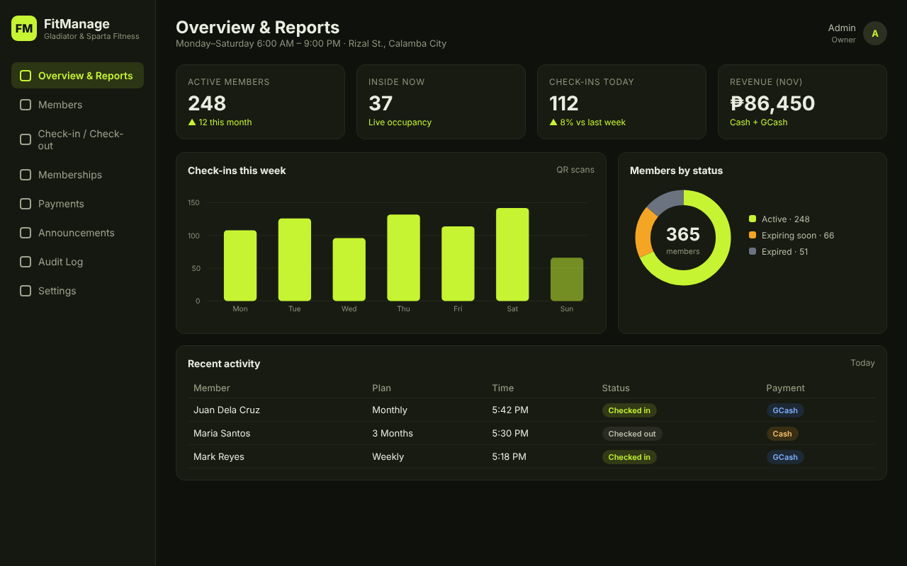

01 · Capstone Project
FitManage — Gym Management System
A web-based management system for Gladiator & Sparta Fitness Gym in Calamba City. Our team built member and admin/front-desk sides with QR code check-in and check-out, membership plans (weekly, monthly, 3 months), cash and GCash payments, a reports page with charts and revenue, email OTP verification at login, and live gym occupancy.